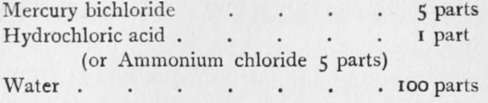
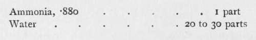
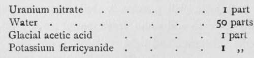
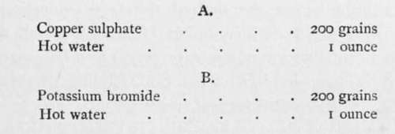
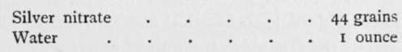

After-Treatment Of Negatives
Description
This section is from the book "The Barnet Book Of Photography", by Herts Barnet. Also available from Amazon: The Barnet Book Of Photography.
After-Treatment Of Negatives
Whilst a negative which has had its faults set right by subsequent chemical treatment is not to be preferred to one which needs no doctoring, it is often imperative that we should use any power within our reach to improve and make the best of an unsatisfactory negative. The two chief processes under this heading are intensification and reduction, and for the purposes of the present article it will be sufficient if a few formulae and their use be given in the briefest manner.
Intensification
A negative which has been taken from the developer too soon may be described as thin, weak, or flat—that is, lacking in sufficient contrast between the parts representing the lights and those corresponding to the shadows, and the print it will yield will possess a dull, foggy appearance; hence we seek to add some fresh matter to the image to increase its substance and light resisting power.
Intensification may take place immediately the negative is finished or at any subsequent time, but it is important that the plate should have been thoroughly fixed and very thoroughly washed. If the negative be dry, it had better be soaked in water for half an hour.
Immerse the plate in the following solution :—
The film will gradually become bleached, first turning grey and then milky white. Occasionally rock the dish. Now remove the plate, and wash thoroughly in running water for two hours.
The bleached image is next blackened by immersing in— .
Or a weak metol developer, or a 10 per cent, solution of sodium sulphite may take the place of the ammonia solution. As soon as the blackening has penetrated through to the back of the plate, which will be in a few minutes, the plate is washed and dried, when it will be found that it has gained considerably in intensity. The first or ammonia method secures a greater degree of intensification, but the results are not always to be relied on as permanent. Sodium sulphite is not such a powerful blackener, but in any case the operation may be repeated from the beginning to gain increased intensification.
Another method is to " stain" the image a reddish colour with a deposit of uranium, which greatly increases its light-resisting power:—
Immerse the negative in the above, and, as soon as it is judged to be sufficiently " browned," remove and rinse in water to which a drop or two of acetic acid have been added, and then wash under the tap until the stain is removed from the more transparent parts. If the water is at all alkaline, as most house water is, the whole of the intensification will be removed, therefore a prolonged washing must be avoided, and hence all or part may be removed at will by a weak solution of carbonate of soda, ammonia, or other alkali. This may be turned to account should it be thought desirable to remove the intensification locally by applying an alkaline solution with a fine brush.
Yet another method of intensification is to bleach in the following:—
 .
When cool, add B to A, and immerse the plate. When bleached, wash for five minutes only, and blacken in— .
Or for greater intensity substitute for the silver solution an ordinary developer.
Reduction
We may now pass to the reverse process, that of reducing the density of a negative which has been overdeveloped. Such a plate yields prints in which the contrasts are too harsh, the more transparent portions printing fully before the light has had time to print the detail and gradation in the denser parts, or the entire negative, may be so opaque that printing takes an inconveniently long time.
We have the choice of several reducers, each acting in a special way, which gives them their respective values.
First we will consider the ammonium persulphate method, which reduces the more opaque parts first, and so, whilst generally reducing, also lessens contrasts. Immerse the thoroughly washed negative in—
Ammonium persulphate . . 10 to 20 grains Water.....I ounce.
After a little while a milkiness is imparted to the water, and the plate should be examined carefully from time to time, reduction now proceeding very rapidly. Remove the plate a little before the desired degree of reduction is reached, as the action continues after its removal, and wash in a gentle stream of water, or action may be instantly arrested by immersion in a 10 per cent, solution of sodium sulphite. Finally, wash for half an hour.
In the second place we have what is known as Farmer's Reducer, which, contrary to the persulphate, attacks the thinnest portions before the denser, and so, whilst reducing density, generally tends to increase contrast. First soak the plate in water, then prepare the following :—
Hyposulphite of soda . £ ounce Water.......4 ounces.
When dissolved, add a few drops of 10 per cent, solution of potassium ferricyanide. The strength may be judged by the colour, which should be a good medium yellow colour. Immerse the plate, and remove when sufficient reduction has taken place. Wash thoroughly.
There are many other less used reducers of which one, an acid permanganate, must suffice. Make 20 per cent, solutions of (A) strong sulphuric acid, and (B) potassium permanganate, and for use take 40 minims of A and 80 minims of B, and add 10 ounces water. Too much permanganate or too little acid will result in staining, which will be best removed by treating in sodium sulphite 60 grains, oxalic acid 12 grains, water 1 ounce, after which, however, the plate should be fixed in hyposulphite of soda bath.
Spotting And Retouching
Our negative is now finished, and there only remains to see what can be done by way of making good any defects due to accident, such as tiny transparent holes, known as " pin-holes," because bearing a resemblance to pin-pricks; or there may be small circular spots of thinner or more transparent film, due to bubbles clinging to the surface for a portion of the time of development. The former would, of course, print as black specks, and hence have to be filled in, a process called " spotting." For this purpose, water-colour paint applied with a dainty touch with the point of a fine camel-hair brush will serve, or there are certain ready prepared spotting colours. Of course the little holes which have been spotted out will now print white, and these must in turn be painted out on the print; semi-transparent spots, if small, or other markings may be removed by retouching. Apply by means of the tip of the finger the least possible amount of the retouching medium to about the region where the spot or defect is, and rub with the soft part of the hand until no longer sticky, then, with a very fine-pointed moderately hard lead pencil, hardly touching the film but just grazing over it, proceed to shade in the spot until it is as dense as the surrounding part, looking through it towards the light all the time. For this purpose a retouching desk is almost essential.
Continue to:
Tags
paper, print, negative, exposure, lens, development, camera, focus